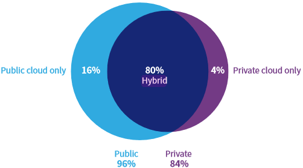

What Cloud Deployment Models are popular?
[AWS: General: Information]
Research by Flexera shows that of the three cloud computing deployment models: cloud (or public cloud), on-premises (or private cloud), and hybrid, Hybrid cloud continues to be the most popular amongst respondents

N=753; Source: Flexera 2022 State of the Cloud Report
The report also shows a slight dip in multiple public cloud usage at 7% (from 10% in 2021, and 6% in 2020)